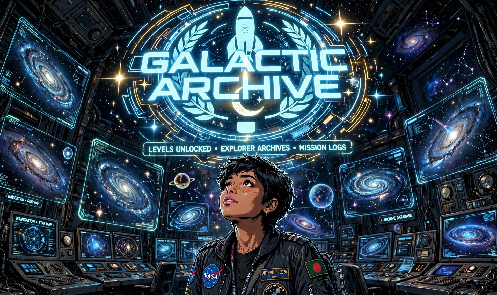

GALACTIC ARCHIVE
Interactive Space History RPG
__presented by Astro Care__

Interactive Space History RPG
Galactic Archive is an interactive retro-comic RPG simulating historic (1960s–70s) and speculative (2020s+) space missions using real NASA telemetry logs.
AudioManager class with dynamic SFX triggerslocalStorage session persistence and archive log trackingPresented by Astro Care | Designed for Space History & Educational Interactive Media